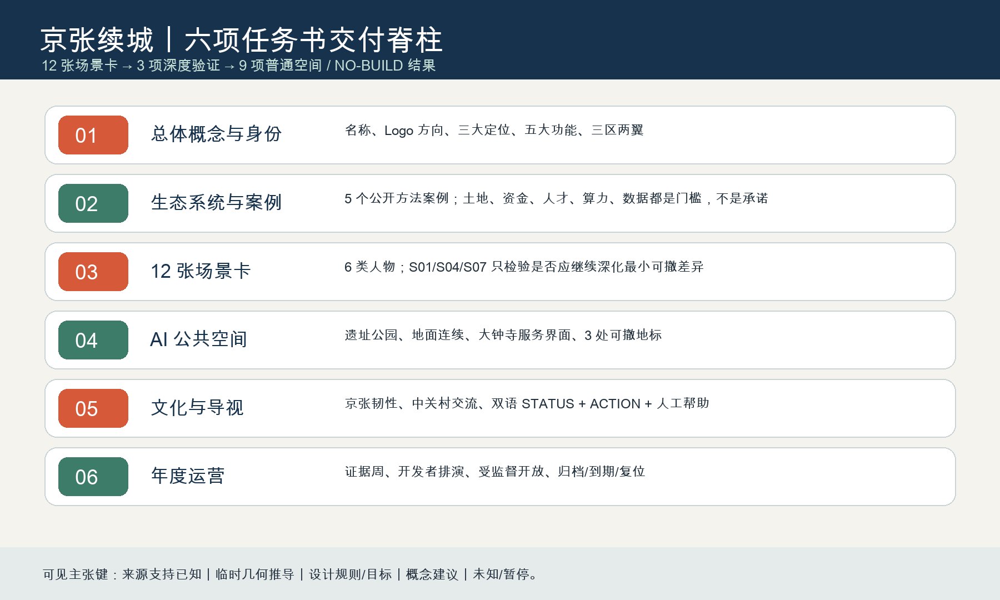
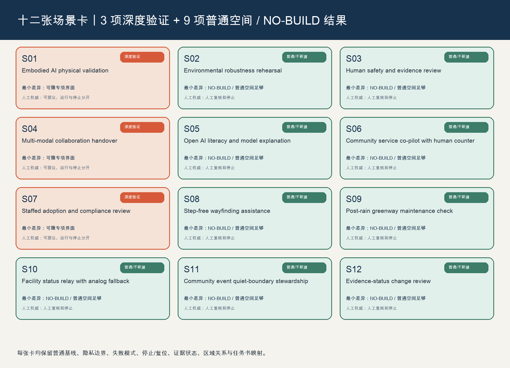

用地分区与建筑
概念用地分区、建筑原型与保留—修复—开放边缘—适应行动共同解释 STATUS × ACTION；不把原型当既有建筑调查。
STATUS × ACTION 决定既有城市能做什么；AI 只在普通空间确实不足时，才可能获得最小、可撤、有人停止权的空间差异。
总览地图把统筹研究、临时总体范围与三处重点区域并置；它只表达概念层级，不是法定边界、权属或工程测量。

概念用地分区、建筑原型与保留—修复—开放边缘—适应行动共同解释 STATUS × ACTION；不把原型当既有建筑调查。
普通街道、步行/无障碍、自行车、服务与蓝绿公共空间先行；桥、隧、地下空间和容量仍是专业深化问题。
更新项目从证据与接口审计开始。核心指标仅为参与者临时几何的可复算设计指标，不替代法定 FAR、高度或容量。
任务覆盖由六项任务脊柱、12 张卡和 3 项验证交叉核对；自检状态、来源与假设分别在 manifest.json、sources.json 与 assumptions.json 中保持可追溯。
12 项任务不是 12 个建设项目：S01/S04/S07 是三个待未来条件确认的深度验证；其余九项明确为普通空间充分或 NO-BUILD。AI 关闭时，公共路径、人工服务、无障碍、维护和日常生活完整成立。
整体概念、生态、场景、公共空间、文化和运营并非孤立章节，而由“问题进入—普通空间充分性—深度准入或 NO-BUILD—人工复核—复位”的回路连接。

京张续城、原创缝线/复位门、三大定位、五大功能、三区两翼回路。
5 个公开方法案例；土地、资金、人才、算力、数据只是门槛与机制。
12 卡、3 验证、6 人物、小月河可申诉维护体验。
遗址公园、地面连续、大钟寺人工证据/申诉界面、3 处可撤地标。
京张韧性、中关村交流、双语“地点 + STATUS + ACTION + 人工帮助”。
证据周、开发者排演、受监督会话、公开复核、到期/归档/复位。
每张卡都保留人物/需求、普通基线、AI 能力、充分性、最小差异、运行/停止主体、隐私、失败、复位、证据状态、区域关系和任务书映射。深度场景只验证是否值得专业深化，绝不等于部署或工程可行。

可撤安全边、观察边、快插包；任务、权利、合格操作人、安全和复位排演齐备才可能讨论。
公开学习与受同意会话间的可撤交接；进入、数据、无障碍和管理条件缺一即保持普通房间。
可撤隐私屏、人工申诉台和证据板；没有纸质兜底、合格复核和争议入口即不开放。
S02/S03/S05/S06/S08/S09/S10/S11/S12 均用普通房间、人工服务、实体导向或维护工单完成。
东西向先做地面步行缝合，南北向先审计站城—地面—公共空间连续性；桥、隧、地下空间和工程容量均不作可行性结论。遗址公园保持 AI-off 的实体解释、可达停留、人工维护和普通公共生活。
众智园类型载体边的状态/复位提示；不阻断公共路径，随 S01 会话包撤除。
AI 原点公开侧的说明、同意和退出；AI 关闭时只是普通公共学习桌。
大钟寺服务类型界面的人工咨询、纸质替代和争议入口；停止后回到普通转介。
可撤证据荣誉轨：只显示经同意的公共贡献、方法、来源、复核日期与到期/复位状态；不做生物特征排名、未证实成就或永久明星化。
“证据周、复位票、普通城市开放室”是活动识别方向，不是确认日程。顺序是：公开问题与核验 → 开发者在普通载体/NO-BUILD 排演 → S01/S04/S07 满足准入后才可受监督会话 → 公共证据与独立复核 → 归档/到期/完全复位。
进入任何场景前必须有公共利益/充分性检验、人工权威、申诉路径、进入确认和复位排演；任何一项失效，即回到普通城市。